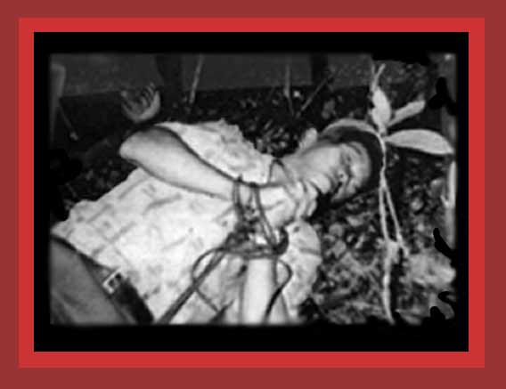

| In June 1994, Communist Lao and Vietnamese soldiers tortured and killed Mr. Yong Neng Vang, a Hmong civilian in the village of Thaket, Borikhamsay Province, Southern Laos. His body is shown here. Source: Lao Human Rights. The original picture is property of the Lao Human Rights Council, Inc. in the United States. Copyright 1999 by Lao Human Rights Council, Inc. in the United States. |